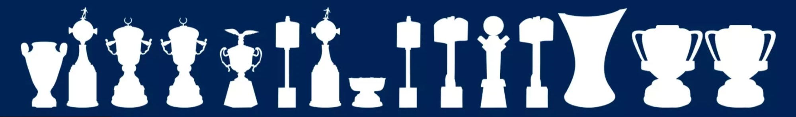

Sala de troféus
Títulos do Cruzeiro
As principais conquistas da Raposa no Brasil e no continente.

2Libertadores
4Brasileiros
6Copas do Brasil
2003Ano da Tríplice Coroa
Internacionais
2
Copa Libertadores da América
19761997
2
Supercopa Libertadores
19911992
1
Recopa Sul-Americana
1998
1
Copa Master da Supercopa
1995
1
Copa Ouro Sul-Americana
1995
Nacionais
4
Campeonato Brasileiro
1966200320132014
6
Copa do Brasil
199319962000200320172018
1
Campeonato Brasileiro Série B
2022
Regionais
2
Copa Sul-Minas
20012002
39
Campeonato Mineiro
O mais recente em 2026, com vitória sobre o Atlético na final.